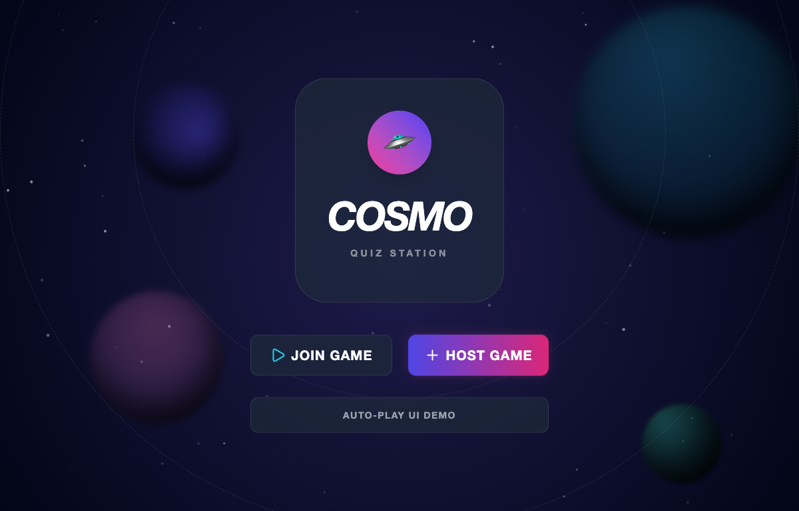
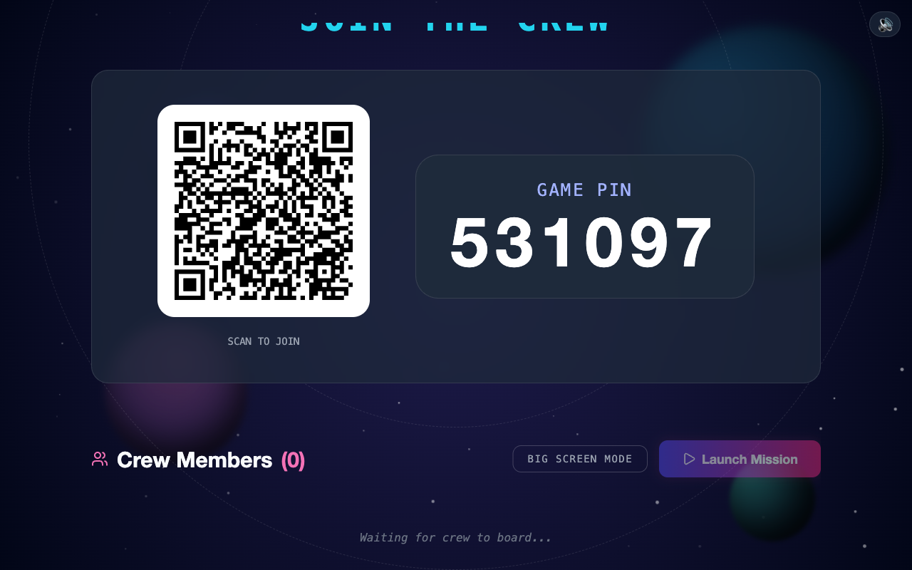
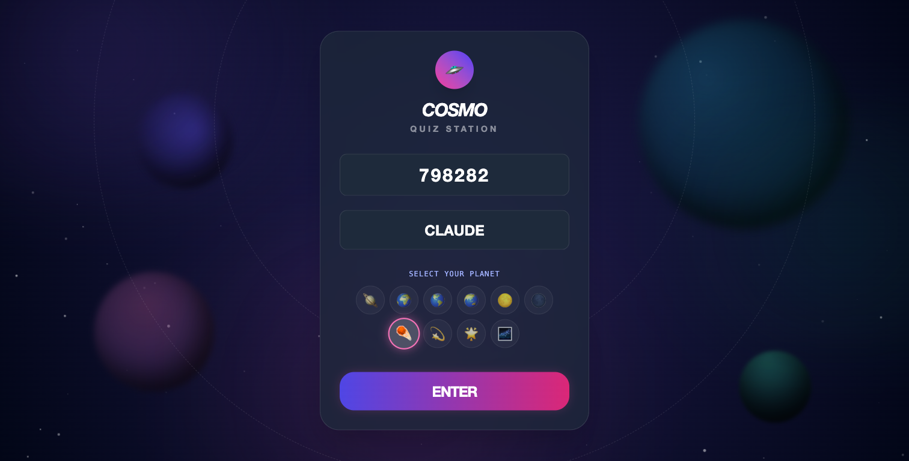
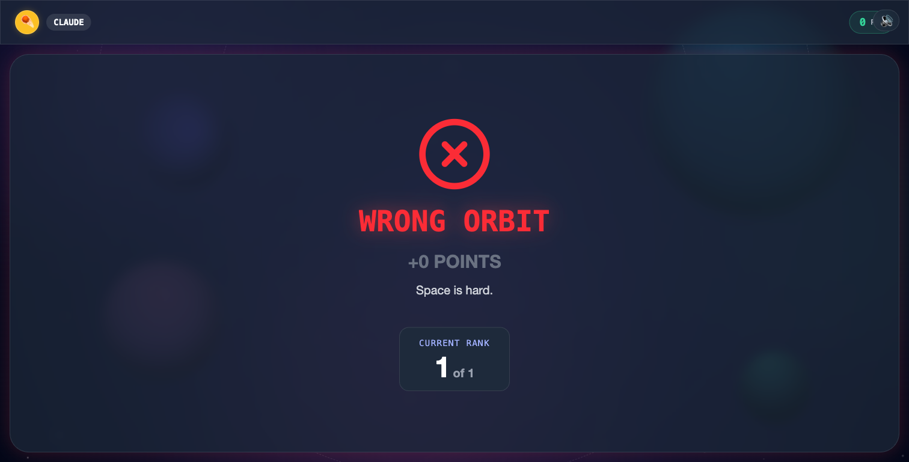

How a structured skill workflow turned good engineering decisions into the default path — told through the real commits of a live multiplayer quiz game.
Almost none of the interesting work was “write feature X.” It was deciding well —
what to spec, what to test first, what to measure, and what to not build. Every claim
below is backed by a real commit you can open in git log.




Superpowers is not “run every skill every time.” It is: every piece of work goes through a disciplined path, and the path depends on the kind of work. Three kinds showed up building this game — each enters through a different skill.
| Work type | The path it takes | Enters through | Examples here |
|---|---|---|---|
| New feature | brainstorm → plan → build → review → verify → finish | brainstorming | PIN-join, image upload, leaderboards |
| Bug | reproduce → find the layer → fix → verify → finish | systematic-debugging | mobile Safari crash |
| Refactor / hardening | make it testable → change → verify → finish | test-driven-development | reconnection grace window |
Not every feature got the full treatment. 9 of 12 features have a design spec; the original scaffold, public hosting, and the host-screen fit went straight to a plan; the hardening work has no spec at all. That’s the lesson, not a failure — the discipline scales to the risk, and a bug is not brainstormed, it’s debugged.
One feature, the whole cycle. Players were blocked at /join by a Google
sign-in redirect, the server ran one game at a time, and mobile join was clumsy. Each step below:
what the skill does → what it produced here → the decision it drove.
Before any code, forces three questions — purpose, constraints, success criteria — then 2–3
approaches, then an approved …-design.md. Its Goals and Non-Goals
are those questions, answered.
Goals: join with PIN + nickname, no account; QR to join; many concurrent games; host
login unchanged. Non-Goals (the “should we also…?” answered no): Redis, REST
endpoints, player accounts, scaling. Approach: instead of “guard the redirect,” trace
the cause (global init()) and extract an <AuthGate> so
/join never imports auth. It enumerated the two surfaces the game needs:
A login-free join by design, and four sub-projects skipped on paper — YAGNI at design
time. (The same self-review step caught a real defect elsewhere:
01d1881 turned a vague image-delete step into a precise contract before any code existed.)
Turns the approved spec into a task list a machine can run: a File Map (every file, create vs. modify, why) and numbered tasks that each end in type-check → commit. It even names its own executor.
In this buildThe plan opens with “REQUIRED SUB-SKILL: superpowers:subagent-driven-development… task-by-task,”
lists exactly 4 files, and spells out Task 1 as: create AuthGate.tsx →
npm run lint → commit. That commit message is adbc3b6 verbatim in the log.
Building became assembly, not discovery — no “oh, I also need to touch store.ts” mid-stream.
Execute the plan task-by-task. Each task is small enough that a fresh agent can run it cold, and each ends in its own commit — so history stays bisectable.
In this build| Commit | Task |
|---|---|
adbc3b6 | add AuthGate component |
d469929 | move init() in so /join never touches Supabase |
fe1cc96 | multi-session server: 6-digit PIN + room-scoped broadcasts |
866cc45 | corrective — fix disconnect, room cleanup, grace timer |
Every step independently revertable — including 866cc45, the catch that the
multi-session refactor had broken disconnect handling.
When the work is complete and verified, pick how to land it (merge / PR / cleanup) and keep the branch to one concern.
In this buildPIN-join shipped as PR #3 — one feature, one branch, one revert button. Across the project that’s 19 small PRs, each undoable on its own.
Decision“Undo all of this” stays a one-line command instead of git archaeology.
PIN-join was a feature, so it entered through brainstorming. Other work enters elsewhere — and skipping brainstorming there is correct, not lazy.
Reproduce, identify which layer is failing, confirm the root cause — instead of pattern-matching a plausible patch.
In this buildAn iOS Safari tab died with “A problem repeatedly occurred.” Not a JS error — a
render-process OOM from ~70 animated blur() + mix-blend layers.
Fix 8e9ff44 gated heavy effects on mobile.
Effort went to the real cause, not the server load tests that are blind to a browser crash.
For silent-corruption-prone logic, get a failing test first. If the code isn’t reachable by a test, make it reachable before changing behavior.
In this build2221e6e extract server/game.ts + baseline socket test, then
5c61720 add the 30s grace window — built against an injectable hostGraceMs
so a test uses 150ms, not 30s.
Logic made testable before behavior changed — verifiable the moment it landed.
Before claiming it works, run the actual check and show the output — and state plainly what is not verified.
In this buildAudio shipped with 76a61e2 — “smoke test passed, all assets 200, no JS errors.”
And the honest inverse: client reconnection was flagged “built but not auto-tested.”
Claims matched evidence; the one real gap was named, not hidden.
Before landing, a review pass focused on correctness and security; act on real issues, push back on wrong ones.
In this buildThe public read endpoint (a4e4bde) was followed immediately by c5255d1
— “prevent host_id leakage.” Review caught a data-leak before merge. Same pass hardened
the upload endpoint (d7453d3).
Review changed the diff — it wasn’t ceremony.
The most valuable outputs were sometimes the code not written.
Full-state broadcast on every answer is textbook O(N²). We measured it (50 players → 90ms stall; 100 → 480ms) instead of guessing, then chose not to fix it: the real target is ~40 players (~50ms, imperceptible). Measure-before-optimize + YAGNI skipped a whole project.
The no-auth spec scoped Supabase behind <AuthGate> so /join never
imports auth (adbc3b6, d469929) — a design decision, not a mid-build patch.
A player needs only a PIN, a name, and a planet:
In-memory state is fast and fragile. Rather than build crash-proof persistence, we documented the boundary: “survives client crashes, not server restarts.” A named, honest gap beats a silent one.